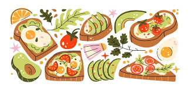

Hola, soy Rochi 👩💻
Esta es mi página
En esta página voy a llevar un seguimiento de elementos y habitos que te impulsan a mejorar a cada día, esta página esta dividia por secciones para usar como guia de cada ambito a mejorar o incluir.
Alimentación
"La alimentación no deberia girar en torno a la pariencia fisica, sino mas bien deberia ayudarte a tener energia, claridad mental, salud y binestar"

CÓMO ARMAR UN PLATO
El cuerpo humano necesita distintos grupos de alimentos para funcionar bien, y un plato equilibrado para lograrlo deberia tener:
- Proteína
- Carbohidratos
- Grasas saludables
- Fibra
- Agua
PROTEINAS
La proteína es al igual que el resto de los grupos antes mencionados algo fundamental en la nutrición humana, esto ya que la funcion de la proteina en nuestra alimentacion es construir musculo, ayudan a saciarse, estabilizan la energia, ayudan a la concentracion e influyen sobre las hormonas.
BUENAS FUENTES DE PROTEINA
Proteína animal
- Huevos
- Pollo
- Pescado
- Atún
- Yogur griego
- Queso
- Carne magra
Proteína vegetal
- Lentejas
- Garbanzos
- Tofu
- Soja
- Frutos secos
- Quinoa
CARBOHIDRATOS
Los carbohidratos no son el enemigo. Son la principal fuente de energia del cuerpo. Muecha gente intenta evitar los carbohidtratos pensando que son la principal causa de perder la linea, los satanizan como si fuera veneno para el cuerpo, cuando en verdad los carbohidratos son indispensables para tener una buena nutrrición y estar fuertes y sanos.
BUENAS FUENTES DE CARBOHIDRATOS
- Arroz
- Avena
- Papa
- Batata
- Pasta
- Pan integral
- Frutas
- Legumbres
GRASAS SALUDABLES
Las grasas saludables son escenciales para el cerebro, hormonas y energia, aun que a primera vista la palabra grasas nos pueda parecer sin pensarlo un segundo el verdadero enemigo de un cambi oen nuestro cuerpo ya que lo asociamos a comida mala como fritos, etc, son escenciales para el buen desarrollo de una nutrición equilibrada.
BUENAS FUENTES DE GRASAS SALUDABLES
- Palta
- Aceite de oliva
- Frutos secos
- Semillas
- Pescado azul
- Aceitunas
FIBRA
La fibra es otro de los puntos importantes de una buena alimentación, esta ayuda a la correcta digestión, a la microbiota, la saciedad y mantener la energía estable.
BUENAS FUENTES DE FIBRA
- Frutas
- Verduras
- Avena
- Semillas
- Legumbres
“Comer bien no debería sentirse como una cárcel. Debería sentirse como cuidar algo que tiene que acompañarte toda la vida: vos.”
Aprendizaje
El aprendizaje es una de las cosas fundamentales de la vida, pero con las distracciones que existen hoy en dia es cada vez más dificil concentarrse y aprender lo que uno se propone. El aprendizaje es algo que no se puede dejar de lado, ya que sin eso no se puede avanzar en la vida, y es por eso que aca se prponen distintos metodos de aprendizajse para poder continuar con este buen habito segun cual sea tu forma de aprender.
METODOS DE APRENDIZAJE
- Active Recall
- Spaced Repetition
- Feynman
- Pomodoro
- Interleaving
- Deep Work
CÓMO PONERLOS EN PRÁCTICA
- Active Recall: El metodo consiste en repasar y ahcer pequeñas evaluaciones despues de repasar, evaluar que tanto entendiste u aprendiste del tema sin mirar los apuntes o lo que estas estudiando.
- Spaced Repetition
- Feynman
- Pomodoro
- Interleaving
- Deep Work
Hábitos
Acá van tus rutinas.
Skincare
Acá va tu rutina facial.
Biblioteca
Acá va tu libros, frases, ideas, conceptos.